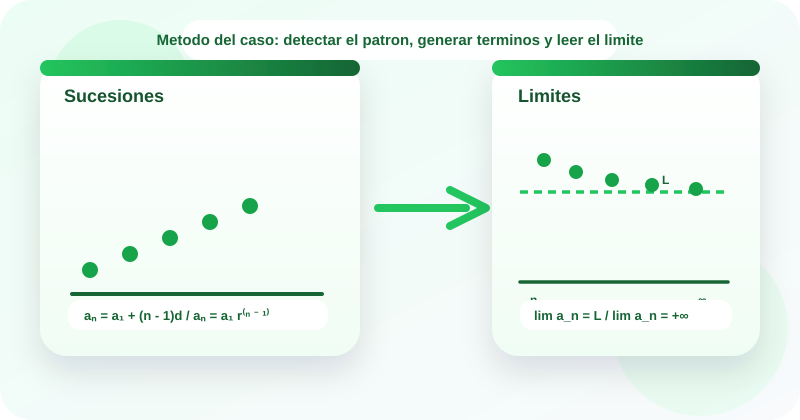

Casos guiados
Estudio de casos
Sucesiones y limites
🔍 Las sucesiones permiten describir como evoluciona un proceso paso a paso, y los limites ayudan a entender hacia que valor tiende ese comportamiento cuando el numero de pasos crece.
En tecnologia aparecen al modelar latencias que se estabilizan, iteraciones de optimizacion, crecimiento de colas o usuarios y ajustes graduales de consumo. Este OVA se enfoca en reconocer si una sucesion es aritmetica, geometrica, convergente o divergente, y en interpretar el limite dentro del contexto del caso.
El recurso usa la metodologia de estudio de casos para identificar el patron de variacion, generar terminos, estimar comportamientos a largo plazo y justificar el limite cuando exista.

Objetivos de aprendizaje
- 🧠 Reconocer cuando una sucesion presenta crecimiento por diferencia constante, razon constante o comportamiento de aproximacion.
- 📈 Calcular terminos de sucesiones aritmeticas y geometricas mediante sus expresiones generales.
- 🎯 Interpretar limites finitos, limites infinitos y casos de divergencia en sucesiones definidas sobre n.
- 💻 Resolver casos del contexto tecnologico donde una metrica evoluciona por iteraciones o se estabiliza con el tiempo.
- ✅ Justificar por que una sucesion converge, diverge o crece sin cota, y explicar el significado del limite dentro del problema.
Contenido tematico
Del patron secuencial al comportamiento a largo plazo
El eje del recurso es leer casos, identificar la sucesion y decidir si existe un limite interpretable.
Sucesion aritmetica
Cada termino se obtiene sumando o restando siempre la misma cantidad.
a_n = a_1 + (n - 1)d
Se reconoce por una diferencia comun constante.
Sucesion geometrica
Cada termino se obtiene multiplicando el anterior por una razon fija.
a_n = a_1 r^(n - 1)
Se reconoce por una razon constante entre terminos consecutivos.
Limite
Describe hacia que valor tienden los terminos cuando n crece indefinidamente.
lim a_n
Ayuda a interpretar estabilidad, saturacion o crecimiento sin control.
Convergencia
La sucesion converge si sus terminos se aproximan a un valor finito.
lim a_n = L
En el grafico, los terminos se acercan cada vez mas a un mismo numero.
Divergencia
La sucesion diverge si no se estabiliza en un valor finito o crece sin cota.
lim a_n no existe
Puede ocurrir por crecimiento ilimitado, decrecimiento sin cota o oscilacion.
Actividades de practica
Refuerza el reconocimiento de patrones, la formulacion de terminos y la lectura de limites mediante ejercicios interactivos y laboratorios guiados.
Actividad 1. Clasifica cada tarjeta
Arrastra cada elemento hacia la categoria correcta.
Si estas en celular, toca una tarjeta y luego la categoria correspondiente.
5, 8, 11, 14
3, 6, 12, 24
lim 1/n = 0
lim (2n + 3) = +∞
Convergente
Divergente
a_n = a_1 + (n - 1)d
lim (n + 1)/n = 1
Sucesion
Limite
Comportamiento
Actividad 2. Relaciona cada caso con su idea matematica
Arrastra cada situacion hacia la categoria que mejor la representa.
Piensa si el problema describe incremento fijo, multiplicacion fija, convergencia o crecimiento sin cota.
Cada iteracion agrega 5 registros mas que la anterior.
Cada ciclo duplica la cantidad de procesos.
La metrica se acerca a 1.00 y se estabiliza.
La cola crece sin detenerse a medida que n aumenta.
La diferencia entre terminos consecutivos es constante.
La razon entre terminos consecutivos es constante.
El limite existe y es finito.
No se aproxima a un valor finito unico.
Aritmetica
Geometrica
Convergente
Divergente
Actividad 3. Ordena la metodologia del caso
Asigna del 1 al 5 el orden correcto para analizar una sucesion y su limite.
Actividad 4. Completa los resultados
Selecciona la respuesta correcta en cada ejercicio.
| Ejercicio | Respuesta |
|---|---|
| Si a_1 = 4 y d = 3, entonces a_6 = | |
| Si a_1 = 3 y r = 2, entonces a_5 = | |
| lim (n + 1)/n = | |
| lim (2n + 3) = |
Actividad 5. Laboratorio de sucesiones y limites
Experimenta con sucesiones aritmeticas, geometricas y con patrones de limite para observar su comportamiento.
Laboratorio 1. Generador de sucesiones
Listo para analizar
Laboratorio 2. Explorador de limites
Listo para analizar
Evaluacion de comprension
Responde el cuestionario para verificar tu dominio sobre sucesiones y limites.
Recursos de apoyo
Antes de calcular
Verifica si el patron cambia por suma fija, multiplicacion fija o aproximacion a un valor.
Durante el analisis
Genera varios terminos antes de emitir conclusiones sobre el limite.
Despues del calculo
Explica si el resultado significa estabilidad, crecimiento sostenido o ausencia de convergencia.
Hoja rapida de estudio
- Las sucesiones aritmeticas cambian por diferencia constante.
- Las sucesiones geometricas cambian por razon constante.
- El limite describe el comportamiento cuando n crece mucho.
- Convergencia significa aproximacion a un valor finito.
- Divergencia puede significar crecimiento sin cota u oscilacion sin estabilizacion.
Bibliografia
Stewart, J. Precalculo.
Larson, R. Precalculo con funciones y graficas.
Zill, D. G. Algebra y trigonometria.
Materiales de aula de la asignatura Fundamentos Matematicos del programa Tecnologia en Desarrollo de Software.
Creado para:
Tecnologia en Desarrollo de Software · Fundamentos Matematicos